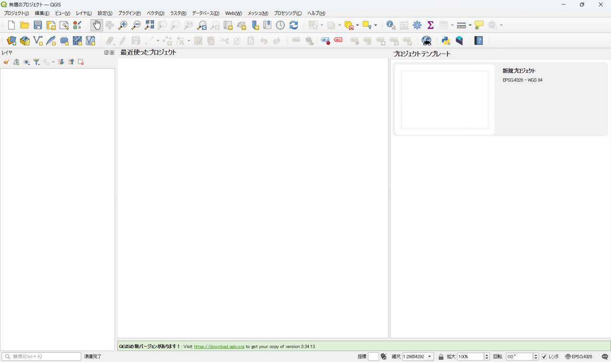
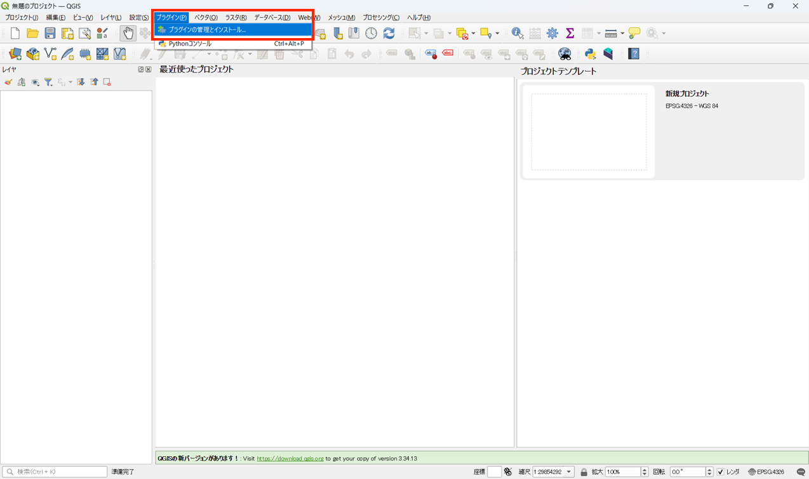
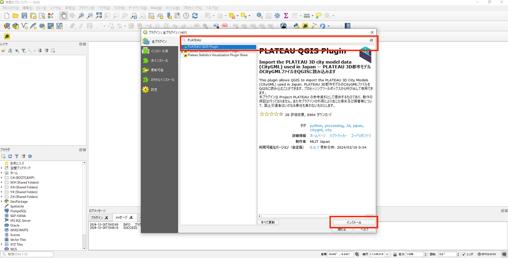
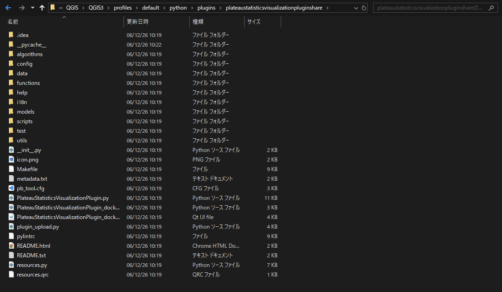

環境構築手順書
1 本書について
本書では、都市構造評価ツール（以下「本ツール」という。）の利用環境構築手順について記載しています。本ツールの構成や仕様の詳細については以下も参考にしてください。
2 動作環境
本システムの動作環境は以下のとおりです。
| 項目 | 最小動作環境 | 推奨動作環境 |
|---|---|---|
| OS | Microsoft Windows 10 または 11 | 同左 |
| CPU | Intel Core i3以上 | 同左 |
| メモリ | 8GB以上 | 同左 |
| ディスプレイ解像度 | 1024×768以上 | 同左 |
| ネットワーク | 【【3D都市モデルデータ読み込み】 各種プラグインをインストールできる環境が必要 【可視化】 オープンストリートマップを表示できる環境が必要 https://www.openstreetmap.org/#map |
同左 |
3 インストール手順
1. QGISのインストール
こちら からQGISをダウンロード、インストールします。
2. PLATEAU QGIS Plugin プラグインのインストール
QGISのインストール後下記の手順を行ってください。
2-1. QGISを起動します。

2-2. メニューのプラグイン>プラグインの管理とインストールを開きます。

2-3. 検索バーにて「PLATEAU」で検索しPLATEAU QGIS Pluginをインストールします。

3. 本ツールプラグインインストール
3-1. プラグインのダウンロード
こちら から本ツールのソースコードをダウンロード可能です。
QGISのインストール後、ダウンロードしたソースコードのsrcフォルダの名前を変更し、 C:\Users{UserName}\AppData\Roaming\QGIS\QGIS3\profiles\default\python\plugins 配下に配置します。

4 準備物一覧
アプリケーションを利用するために以下のデータを入手します。
| データ種別 | 機能 | 用途 | 入力方法 | |
|---|---|---|---|---|
| ① | 【IF001】3D都市モデル(CityGML)G空間情報センターから取得します。 https://front.geospatial.jp/ |
評価指標算出機能 | 全般 | 格納フォルダパス指定 |
| ② | 【IF002】ゾーンポリゴン 小地域（基本単位区 JGD2011）境界データをe-stat から取得します。 https://www.e-stat.go.jp/gis |
評価指標算出機能 | 全般 | 格納フォルダパス指定 |
| ③ | 【IF003】鉄道駅位置 鉄道駅位置（ライン）データを国土数値情報から取得します。 https://nlftp.mlit.go.jp/ksj |
評価指標算出機能 | 全般 | 格納フォルダパス指定 |
| ④ | 【IF004】道路ネットワーク OpenStreetMapデータをgeofabrikから取得します。 https://download.geofabrik.de/asia/japan.html |
評価指標算出機能 | 全般 | 格納フォルダパス指定 |
| ⑤ | 【IF005】施設ポイントデータ 各施設（ポイント）データを国土数値情報から取得します。(医療施設、学校、行政施設、福祉施設、文化施設) https://nlftp.mlit.go.jp/ksj |
評価指標算出機能 | 全般 | 格納フォルダパス指定 |
| ⑥ | 【IF006】 避難施設情報 避難施設（ポイント）データを国土数値情報から取得します。 https://nlftp.mlit.go.jp/ksj |
評価指標算出機能 | 全般 | 格納フォルダパス指定 |
| ⑦ | 【IF007】 鉄道ネットワーク 鉄道（ライン）データを国土数値情報から取得します。 https://nlftp.mlit.go.jp/ksj |
評価指標算出機能 | 全般 | 格納フォルダパス指定 |
| ⑧ | 【IF008】 バス停位置 GTFS JP 形式で作成されたデータ |
評価指標算出機能 | 全般 | 格納フォルダパス指定 |
| ⑨ | 【IF009】 バスネットワーク GTFS JP 形式で作成されたデータ |
評価指標算出機能 | 全般 | 格納フォルダパス指定 |
| ⑩ | 【IF010】 国勢調査メッシュ別データ e-statから取得します。 https://www.e-stat.go.jp/gis | 評価指標算出機能 |
全般 | 格納フォルダパス指定 | |
| ⑪ | 【IF011】 メッシュ別将来推計人口データ 500mメッシュの将来推計人口データを国土数値情報から取得します。 https://nlftp.mlit.go.jp/ksj |
評価指標算出機能 | 全般 | 格納フォルダパス指定 |
| ⑫ | 【IF012】250mメッシュポリゴンデータ 250mメッシュ境界データをe-statから取得します。 https://www.e-stat.go.jp/gis |
評価指標算出機能 | 全般 | 格納フォルダパス指定 |
| ⑬ | 【IF013】ハザードエリア 洪水浸水想定区域（1次メッシュ単位）データ、高潮浸水想定区域（ポリゴン）データ、津波浸水想定（ポリゴン）データ、土砂災害警戒区域（ポリゴン）（ライン）データを国土数値情報から取得します。 https://nlftp.mlit.go.jp/ksj |
評価指標算出機能 | 全般 | 格納フォルダパス指定 |
| ⑭ | 【IF014, IF015, IF019, IF020】都市機能誘導区域,居住誘導区域, 都市計画区域, 用途地域 立地適正化計画区域（xxxxx_ritteki.shp）、都市計画区域（xxxxx_tokei.shp）、用途地域（xxxxx_youto.shp）データを都市計画決定GISオープンデータから取得します。 https://www.mlit.go.jp/toshi/tosiko/toshi_tosiko_tk_000087.html |
評価指標算出機能 | 全般 | 格納フォルダパス指定 |
| ⑮ | 【IF016】交通流動 交通流動量 パーソントリップ発生・集中量データを国土数値情報から取得します。 https://nlftp.mlit.go.jp/ksj |
評価指標算出機能 | 全般 | 格納フォルダパス指定 |
| ⑯ | 【IF017】地価公示 地価公示（ポイント） データを国土数値情報から取得します。 https://nlftp.mlit.go.jp/ksj |
評価指標算出機能 | 全般 | 格納フォルダパス指定 |
| ⑰ | 【IF019】空き家 空き家ポイントデータ（シェープファイル）を作成します。 |
評価指標算出機能 | 全般 | 格納フォルダパス指定 |